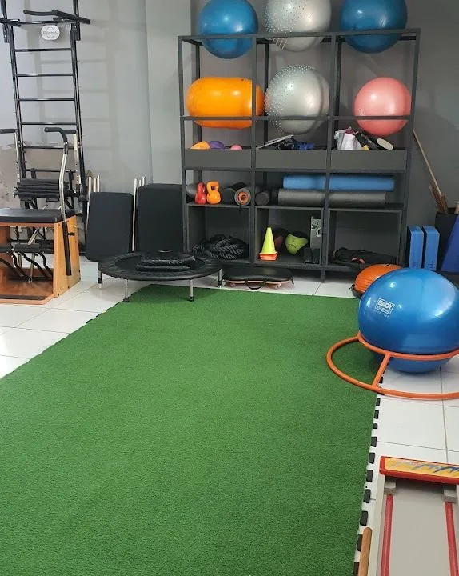
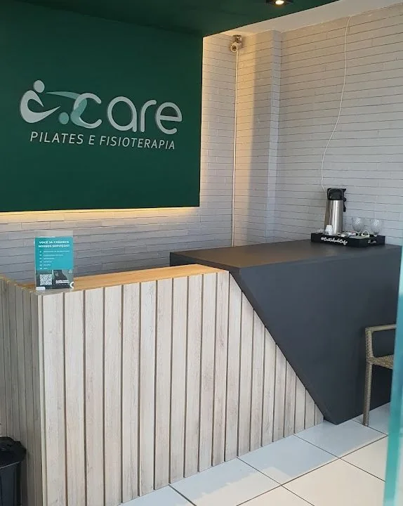

Fisioterapia
Conte para a gente o que você procura e conheça os atendimentos de Fisioterapia na Care.

João Pessoa · Unidade Estados
Pilates e Fisioterapia na unidade Estados, em João Pessoa. Conheça nossos atendimentos e converse com a gente sobre o que você procura.
Quero conhecer a CareConheça as nossas possibilidades de atendimento. A equipe pode esclarecer suas dúvidas e orientar os próximos passos.
Conte para a gente o que você procura e conheça os atendimentos de Fisioterapia na Care.
Uma prática que faz parte do nosso dia a dia. Converse sobre as aulas e os horários disponíveis.
Conheça essa modalidade do nosso espaço e tire suas dúvidas antes de começar.
Fale com a nossa equipe sobre a modalidade e as informações para o atendimento.
Conheça um pouco do ambiente e dos materiais que fazem parte da nossa rotina de atendimento. Para visitar a unidade Estados, combine os detalhes com a gente.
Combine sua visita com a gente ↗

Conte o que procura, tire suas dúvidas e combine os detalhes antes da visita.
Envie sua mensagem pelo WhatsApp e diga o que gostaria de conhecer.
Converse com a equipe sobre valores e horários disponíveis.
Confirme os detalhes para conhecer o nosso espaço.
Estamos na Avenida Acre, no bairro dos Estados. Fale com a gente para consultar os atendimentos e os horários.
Conversar pelo WhatsAppAv. Acre, 446
Estados · João Pessoa, PB
(83) 98632-8689
Ver localização no mapa ↗Consulte os horários e confirme os detalhes da visita antes de vir.
As informações de contato e localização desta página são da unidade Estados, na Avenida Acre, 446, em João Pessoa.
Entre em contato e diga se procura Fisioterapia ou Pilates. A equipe pode esclarecer suas dúvidas e informar a disponibilidade.
Nossa equipe informa as opções e a disponibilidade atual pelo WhatsApp.